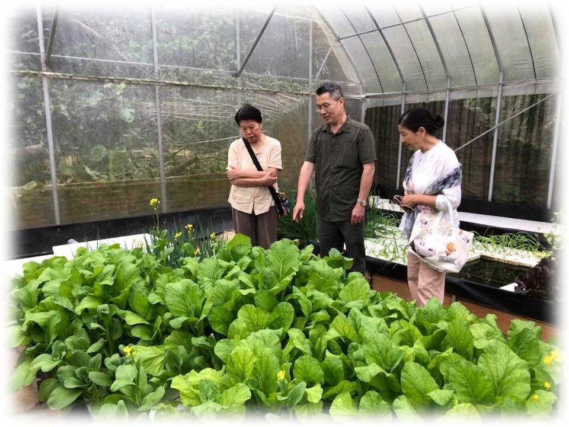
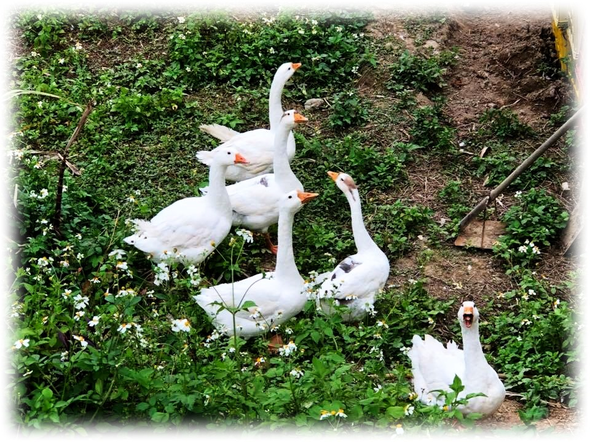
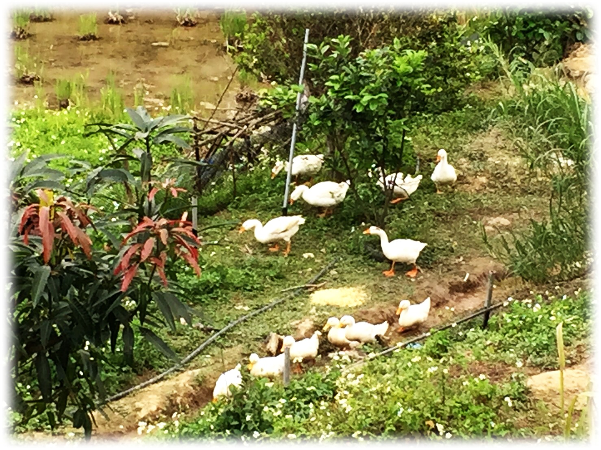
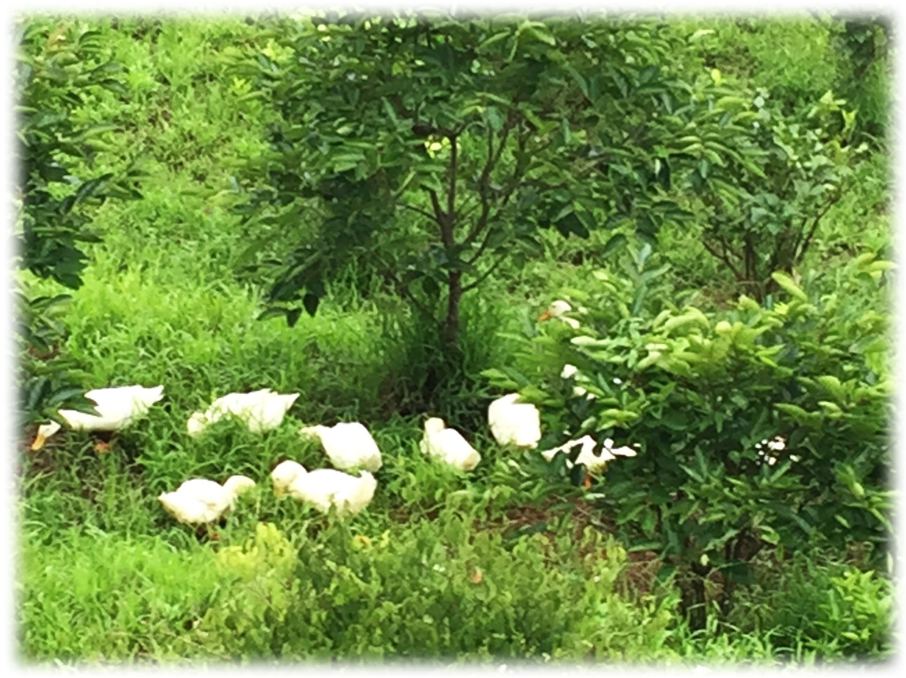
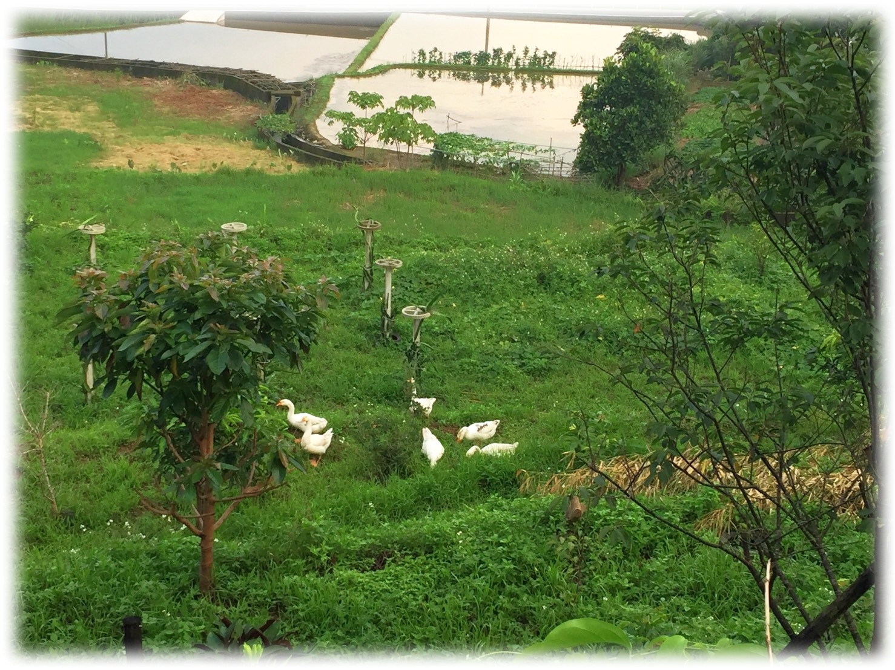
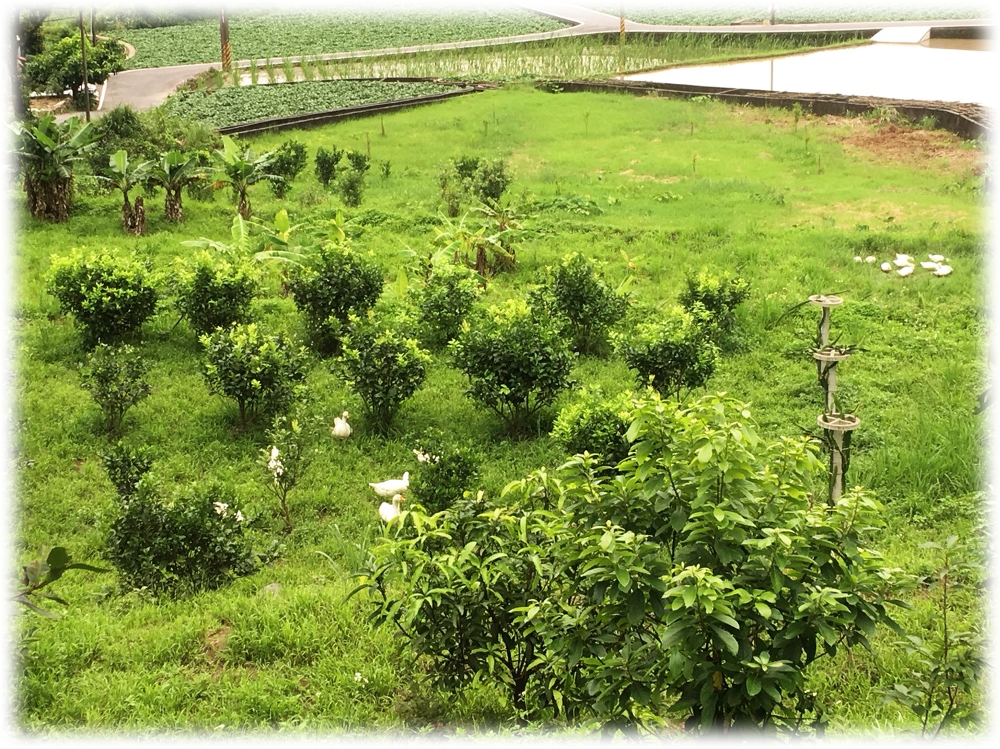
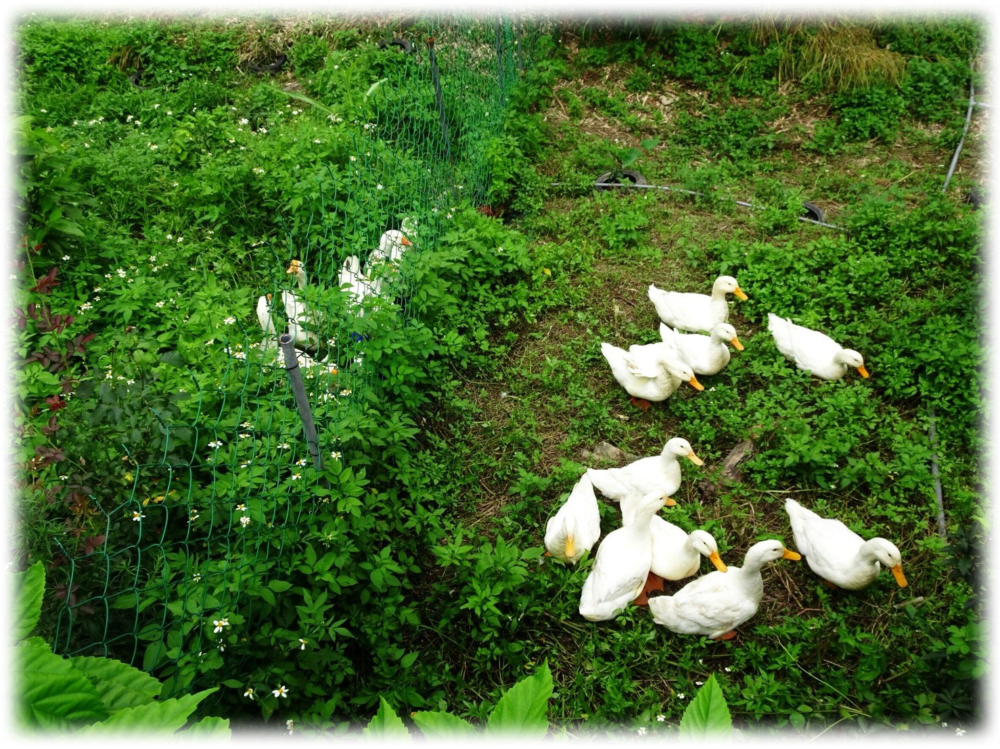
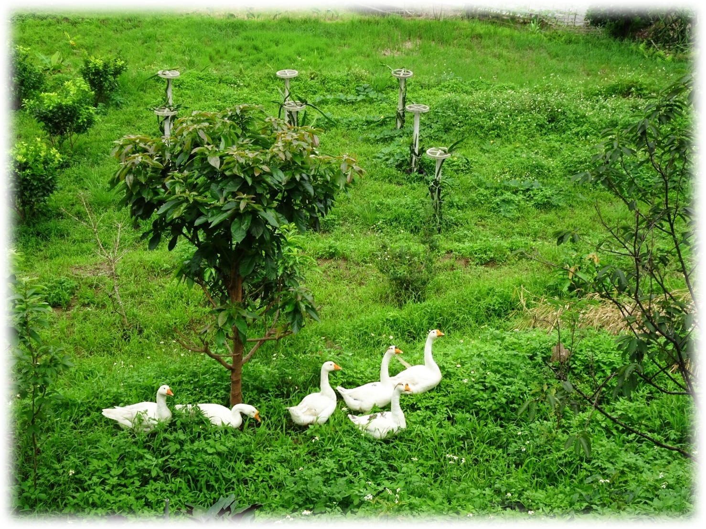
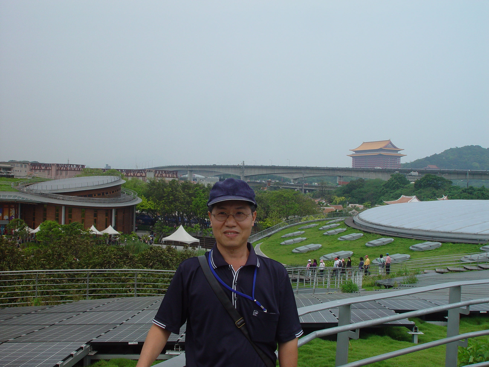
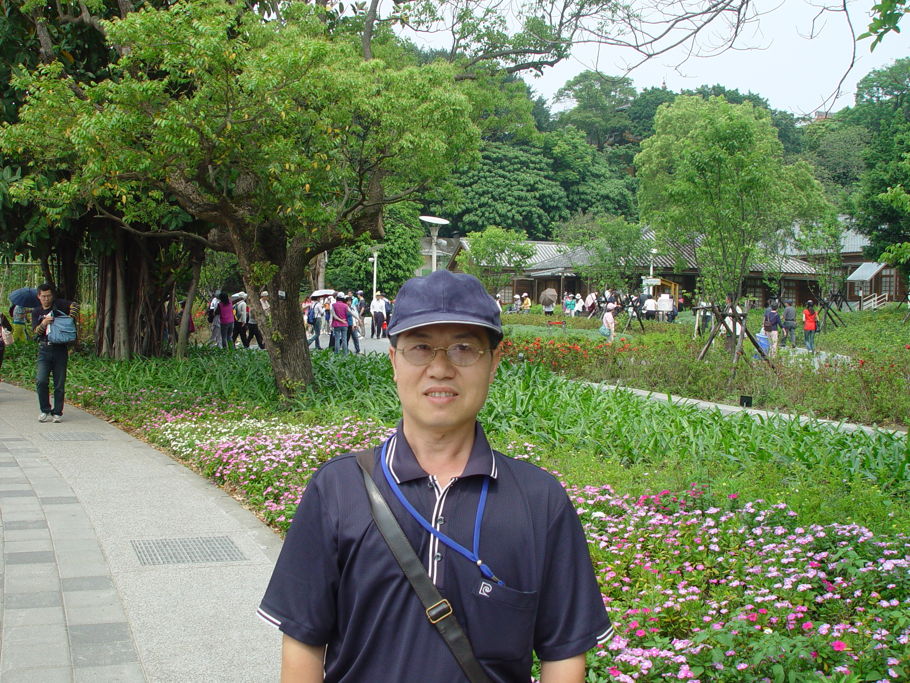

分享說明
分享好聽的音樂
把想分享的 MP3 獨立放在這裡
這裡是分享音樂專區，和原本的生命故事歌曲分開管理。上傳的新 MP3 會放在這份播放清單，方便直接點選播放。
分享播放清單
選擇一首歌曲
點選左側歌曲後，這裡會顯示歌曲說明。
分享音樂整理方式
這個頁面專門放「分享好聽的音樂」MP3；原本的「聽生命歌曲」仍保留生命故事歌曲，不會混在同一份播放清單。
田園記憶
青田、白鴨與一路走來的風景
從溫室裡的鮮綠蔬菜、果園間悠遊的白鴨，到花博留下的生活身影；讓影像陪著歌聲，記住土地與日常的溫度。









